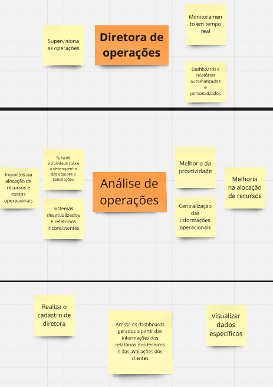

PBB
Nessa sessão iremos apresentar o PBB feito a partir do estudo de caso feito em sala, além das histórias de usuario geradas a partir dele, os critérios para a priorização foram definidos a partir do valor de negócio (importância da funcionalidade) e dificuldade técnica.
aqui estão os problemas e expectativas gerados no PBB

Aqui estão as personas indentificadas no PBB



Para visualizar o quadro inteiro no miro clique aqui
História de usuário
RF1-Título: Realizar cadastro de técnico
Como um(a): Técnico de Campo
Eu quero: Realizar meu cadastro na plataforma da TechFix
Para que: Eu possa acessar a plataforma
Critérios de aceitação:
Os dados de entrada são nome,CPF e senha.
Ao terminar o cadastro o Técnico é direcionado a tela de atendimento.
No caso de alguma falha o Técnico deve receber uma resposta do sistema informando qual campo foi preenchido errado.
BDD:
Cenário : Cadastro de técnico com os dados válidos.
Dado que estou na página de cadastro de técnico
e insiro nome
e CPF
e senha
Quando clico no botão cadastrar,
Então o técnico é cadastrado com sucesso e redirecionado a tela de atendimento.
Cenário : Cadastro com dados inválidos.
Dado que estou na página de cadastro de técnico
e não insiro nome
ou CPF
ou senha
Então vejo uma mensagem de erro informando qual campo não foi preenchido
e permaneço na página de cadastro
RF2 - Título: Visualizar o histórico de atendimentos
Como um(a): Técnico de Campo
Eu quero: Acessar o histórico de atendimentos
Para que: Eu possa ver as informações dos atendimentos passados
Critérios de aceitação:
O técnico deve ter total acesso aos históricos de atendimentos.
O técnico deve possuir a capacidade de filtrar o atendimento por data, cliente e tipo de atendimento, caso o usuário coloque um filtro inválido o sistema alerta.
O sistema deve exibir apenas os atendimentos que correspondem aos critérios de filtragem que foram selecionados, caso não existam o sistema alerta.
BDD:
Cenário : Visualizar os histórico completo de atendimentos
Dado que estou na página de histórico de atendimentos
e não aplicar filtros
Quando clico no botão buscar
Então vejo um histórico com todos os atendimentos registrados
Cenário :Filtro inválido
Dado que estou na página de histórico de atendimentos
e insiro critérios inválidos como data final menor que inicial
Quando clico no botão buscar
Então vejo uma mensagem informando filtros inválidos revise os campos preenchidos
e continuo na página de histórico de atendimentos
RF3 -Título: Visualizar Informações dos equipamentos
Como um(a): Técnico de Campo
Eu quero: Ter acesso a todas informações referente aos equipamentos
Para que: Eu possa conseguir visualizar as informações dos equipamentos de forma prática
Critérios de aceitação:
O técnico é capaz de visualizar as informações de um equipamento a partir do seu nome ou número de série
Caso um equipamento não seja encontrado o sistema deve enviar uma mensagem informando o técnico
Todo equipamento deve ter informações sobre seu hardware e seu funcionamento
BDD:
Cenário : Visualizar as informações de um equipamento pelo nome.
Dado que estou na página de consulta de equipamentos
e insiro nome do equipamento “Chave de fenda”
Quando clico no botão buscar
Então vejo as informações completas sobre o funcionamento do equipamento
Cenário : Equipamento não encontrado por consulta pelo número de série.
Dado que estou na página de consulta de equipamentos
e insiro um número de série não existente
Quando clico no botão buscar
Então vejo uma mensagem informando “Equipamento não encontrado”
RF4 - Título: Adicionar informações sobre os atendimentos
Como um(a): Técnico de Campo
Eu quero: Adicionar informações sobre um atendimento
Para que: Eu tenha uma fonte de registro fácil assim sendo gerados relatórios precisos
Critérios de aceitação:
O técnico é capaz de relatar problemas gerais que possuem campos de seleção como hardware danificado, problema de atualização, problema de software , falta de conhecimento do cliente ou outros
O técnico é capaz de relatar problemas específicos escrevendo o que aconteceu no atendimento, caso o problema atendido no agendamento não caiba nos campos pré existentes ou caso ele queira detalhar melhor o que aconteceu
BDD:
Cenário: Adicione informações gerais com campos de seleção.
Dado que estou na página de atendimento
e seleciono uma opção de hardware danificado
ou problema de atualização
ou problema de software
ou falta de conhecimento do cliente
Quando clico no botão adicionar dados
Então o sistema salva a seleção com sucesso
Cenário : Adicionando informações sem os campos.
Dado que estou na página de atendimento
e o problema do agendamento não se encaixa em nenhuma das opções gerais disponíveis
Quando escrevo uma descrição detalhada do problema
Então o sistema salva a descrição
RF5 - Título: Adicionar informação dos equipamentos
Como um(a): Técnico de Campo
Eu quero: Adicionar informação sobre algum equipamento
Para que: Eu possa ter essa informação futuramente
Critérios de aceitação:
O técnico é capaz de adicionar informações a algum equipamento específico, essas informações são apenas informações gerais sobre como lidar melhor com aquele equipamento
As informações adicionais são visíveis somente aquele técnico
BDD:
Cenário: Adicionar informações gerais sobre um equipamento.
Dado estou na página de detalhes de um equipamento,
e o equipamento específico está selecionado
Quando adiciono informações gerais sobre como lidar melhor com o equipamento no campo designado
e clico no botão salvar
Então o sistema salva essas informações com sucesso
Cenário: Garantir visibilidade das informações apenas ao técnico
responsável.
Dado que adiciono informações gerais sobre um equipamento
e outro técnico acessa o mesmo equipamento
Quando o sistema exibe os detalhes do equipamento
Então as informações adicionadas são visíveis apenas para o técnico que as registrou
RF6 - Título: Realizar cadastro de Cliente corporativo
Como um(a): Cliente corporativo
Eu quero: Realizar meu cadastro na plataforma da TechFix
Para que: Eu possa acessar a plataforma
Critérios de aceitação:
Os dados de entrada são nome,CPF, endereço, tipo de cliente (corporativo neste caso).
Ao terminar o cadastro o cliente é direcionado a tela inicial.
No caso de alguma falha o cliente deve receber uma resposta do sistema informando qual campo foi preenchido errado.
RF7 - Título: Realizar agendamento
Como um(a): Cliente corporativo
Eu quero: Realizar um agendamento de uma visita técnica
Para que: Eu possa agendar minhas próprias visitas de forma rápida
Critérios de aceitação:
Os dados de entrada da solicitação são a data e o local do agendamento, além do nome de quem receberá o técnico.
Caso algum dado seja inválido ou a data não esteja mais disponível, o sistema deve enviar uma mensagem alertando o erro.
Além dos dados do agendamento, o cliente tem um campo de texto para explicar alguma especificação do agendamento.
RF8 - Título: Receber plano de ação
Como um(a): Cliente corporativo
Eu quero: Receber um plano de ação
Para que: Eu saiba o que será realizado durante o atendimento
Critérios de aceitação:
RF8 - Título: Receber relatório do atendimento
Como um(a): Cliente corporativo
Eu quero: Receber um relatório do atendimento
Para que: Saber o que foi durante o atendimento
Critérios de aceitação:
RF9 - Título: Realizar avaliação do atendimento
Como um(a): Cliente corporativo
Eu quero: Avaliar o atendimento
Para que: Eu tenha minhas críticas e sugestões ouvidas
Critérios de aceitação:
RF10 -Título: Realiza o Cadastro da Diretora
Como um(a): Diretora de Operações
Eu quero: Realiza o meu cadastro na plataforma da TechFix
Para que: Eu possa ter acesso a plataforma
Critérios de aceitação:
RF11 -Título: Acessar os Dashboards
Como um(a): Diretora de Operações
Eu quero: Visualizar Dashboards a partir das informações dos clientes e técnicos
Para que: Eu possa melhorar a eficiência operacional
Critérios de aceitação:
RF12 -Título: Filtrar os dados
Como uma: Diretora de Operações
Eu quero: Ter a possibilidade de filtrar todos os dados do sistema
Para que: Eu possa visualizar e comparar esses dados
Critérios de aceitação: